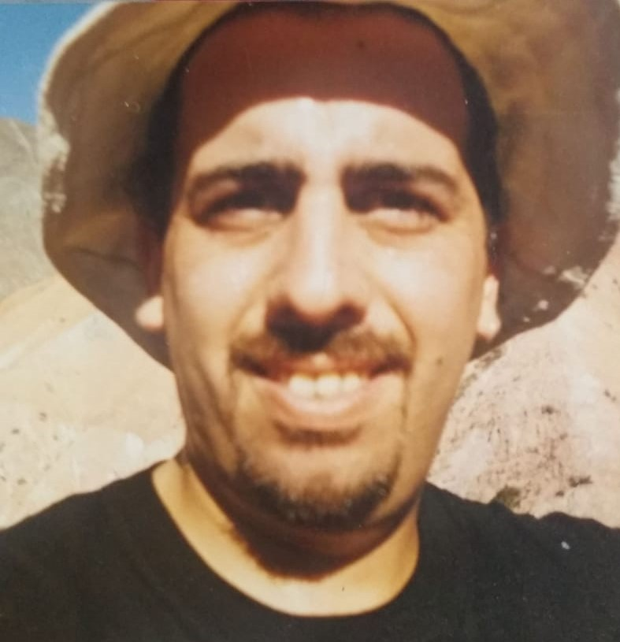

Nosotros

Nuestros proyectos
Misceláneas
He trabajado como vendedor casi toda mi vida , empezando desde joven en Servicios en Informatica S.A.
comence como cadete y llegue a ser vendedor tecnico.
He realizado trabajos como atencion al cliente (tren de la costa) , ventas , supervision y capacitacion de vendedores (FDC filtfos de agua comerciales . ) , encargado de planta en Homesystems S.A.( empresa fabricante de Hidromasajes) y actualmente soy socio en el instituto de ingles Your Own Way .
Estoy cursando la carrera de Tecnico superior en analisis de sistemas y trabajando a tiempo completo en Openpass donde estuve en el equipo de microservicios en BE y ahora en QA automation, en la parte de desarrollo de testeos en JavaScript.
Analista de Sistemas y Desarrollador de Software con experiencia tanto del lado técnico como funcional.Tengo experiencia en varios proyectos en mayor parte en el rubro de banca y financiero.
Actualmente me aboco a tareas de análisis,soporte y resolución de incidentes como Analista Técnico Funcional en el módulo de SAP BANKING.
Skills
Cloud : AWS , OCI
Repositorios : Github , Docker
Lenguajes de programacion: Abap,Python,Java,JavaScript,node.js,SQL & Bases de datos relacionales
Otros conocimientos: SCRUM ,Metodologias Agiles
Cinthia tiene un capacidad de adaptación excepcional, acompañada por una actitud positiva y motivadora para con sus colegas. Es capaz de superar desafíos de una manera sencilla y natural del día a día. Tiene un grado de responsabilidad y compromiso total. Siempre apuesta por un constante crecimiento sumandose a propuestas que involucren capacitación o inovaciones tecnologicas. Aporta muchisimo en el ambiente de trabajo haciendo muy agradable todas las actividades en donde ella participe.
Compartiendo por primera vez proyecto con ella, fue destacable que superaba en skills su rol de analista de calidad manual que desempeñaba en aquel entonces, dado que lograba llevar a cabo tareas que requerían ciertos skills de programación, por lo que no le llevo mucho tiempo hacer el salto a QA Automation con excelentes resultados. De los perfiles ideales para un equipo de calidad.
Mi nombre es Cristian Jelovcic, soy programador. Trabaje 10 años como jefe Comercial en una empresa multinacional de Retail. Motivado por aprender y hacer cosas nuevas decidí hacer un cambio de carrera.